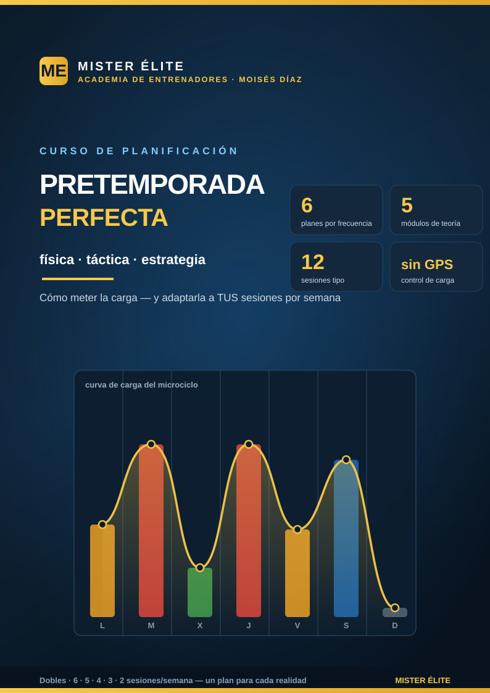

Pretemporada perfecta — física, táctica y estrategia
Cómo meter la carga física y adaptar el plan a tus sesiones por semana
Bienvenido al curso de planificación de la pretemporada de MISTER ÉLITE — Moisés Díaz. La pretemporada es la única ventana del año en la que puedes construir, sin coste de puntos, el motor físico, la identidad de juego y la cohesión que sostendrán toda la temporada. Mal planificada, es también la ventana donde más se lesiona la gente. Este curso te da un método para hacerla bien en tu contexto real.
La idea que atraviesa todo el curso: no existe "la pretemporada", existe tu pretemporada. No es lo mismo planificar con dobles sesiones que con tres entrenamientos a la semana. Por eso aquí no encontrarás un único plan, sino un método para construir el tuyo y seis planes ya hechos, uno por cada frecuencia de entrenamiento.
Filosofía del curso
- Poca teoría, mucha aplicación. Lo justo de ciencia para tomar buenas decisiones; el resto, planes y sesiones listas para llevar al campo.
- Sin tecnología cara. Todo el control de carga se hace con percepción de esfuerzo (RPE), papel y sentido común. Si tienes GPS, mejor; si no, también.
- Adaptado a tu realidad. Dobles sesiones, 6, 5, 4, 3 o 2 entrenamientos por semana: hay un plan para cada uno.
- Honesto con la evidencia. Citamos a los autores de referencia (Buchheit, Gabbett, Foster, Seirul·lo, Frade…) y también decimos dónde la ciencia tiene dudas.
Cómo está organizado
Teoría (4 módulos) — el porqué: 1. Fundamentos — qué es y qué NO es la pretemporada, sus fases y los modelos de periodización. 2. La carga física — qué es la carga, cómo medirla sin tecnología, ACWR, supercompensación y prevención de lesiones. 3. Cómo meter las cargas — el módulo central: el microciclo, integrar físico y táctico, la curva de carga, el orden de las capacidades y el tapering. 4. Táctica y estrategia — qué entrenar y en qué orden, construir identidad, los amistosos y el balón parado.
Práctica — el cómo: - Mapa de decisión — empieza aquí: elige tu plan según tus sesiones, semanas y recursos. - 6 planes por frecuencia — microciclo tipo + reparto de cargas para dobles / 6 / 5 / 4 / 3 / 2 sesiones. - Banco de 12 sesiones tipo — cada una con su pizarra: tests, aeróbico, HIIT, RSA, velocidad, prevención, rondos, juego de posición, fases de juego y partido. - Herramientas de control — plantillas de sRPE, ACWR, wellness y batería de tests.
Cómo usar el curso
- Lee los 4 módulos de teoría (una tarde). No necesitas dominarlos, solo entender las ideas.
- Ve al Mapa de decisión y localiza tu nivel de frecuencia.
- Abre tu plan y cópialo a tus fechas reales (cuántas semanas tienes hasta el debut).
- Rellena cada sesión con el banco de sesiones según el contenido del día.
- Controla la carga con las herramientas y ajusta sobre la marcha.
La base científica y las fuentes están recogidas en el material del curso. Las cifras (semanas, porcentajes de tapering, rangos de ACWR) son referencias orientativas: el buen entrenador las adapta a su equipo.
MISTER ÉLITE — Moisés Díaz · Academia de entrenadores